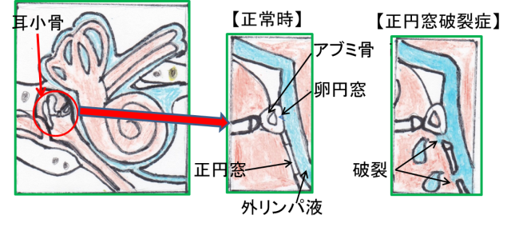
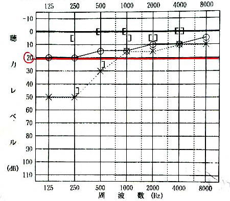

突発性難聴、急性低音障害型感音難聴、メニエール病でお困りの方はTeaching Beauty鍼灸マッサージ整骨院へ。
電話でのご予約・お問い合わせはTEL.03-6413-7803
〒154-0014 東京都世田谷区新町3-21-1さくらウェルガーデン３F
急性低音障害型感音難聴acute low-tone sensorineural hearing loss
低音障害型感音難聴、突発性難聴、メ二エール病 専門鍼灸院
【急性低音障害型感音難聴（ALHL）とは】
この病気は突発性難聴と同様に突如として発症しますので突発性難聴と間違われてしまいがちですが、聴力検査を行うと低音域のみがやられてしまっているのが特徴です。
近年では、30~40代女性に急増していて80％が女性という病気です。
原因は、はっきりしていないのですが、ストレスとの関係性が強いと言われています。
そのため、ストレス性難聴とも言われています。
ストレス社会の現代では、この5年間に患者さんが急増し全国に6~7万人もの人がこの病気により苦しんでいると言われています。
症状としては、低音域が聞こえなくなる。耳を塞いだ時のような『ゴー』っといった低い音の耳鳴りがする。 耳に水が入った時のような詰まった感覚がする。などが特徴としてあげられます。
【急性低音障害型感音難聴と間違われやすい疾患】
①内耳窓(正円窓)破裂症（外リンパ痩）
内耳窓破裂症は、外リンパ瘻とも呼ばれます。
正円窓 (蝸牛窓)の 破裂などにより、外リンパ液が内耳から中耳などに漏れることで聴力や平衡器官に障害が起こります。

②メニエール病
メニエール病は、難聴、回転性めまい（目の前がぐるぐる回るめまい）、耳鳴りの３つが特徴的な症状です。
原因は内耳にある「内リンパ」の水腫（むくみ）だと言われています。
この病気は気候の変化（低気圧、台風などの前線の接近）などで気圧が急に下がった時に発症することが多いと言われています。
また、寝ても治まらない、めまいの症状が30分～数時間続いて、ひどい場合は吐き気、冷や汗なども1回だけではなく繰り返し起こるのが特徴です。
そのため、1度、めまいが30分以上したからといっても、その段階でメニエール病とは断定できません。あくまでも、何回か繰り返してからメニエール病の診断がくだります。
この急性低音障害型感音難聴は蝸牛のみに浮腫みが起こるものなので、「蝸牛型メニエール病」や「メニエール病非定型例」との別名もあります。そのため、メニエール病に大変似た病気になります。
急性低音障害型感音難聴は基本的にはめまいがないとされているのですが、ごく少数、めまいを伴う患者様が見受けられるのが現状です。しかし、めまいは繰り返すものではなく一時的なものが多いです。
症状がよく似ているため、初回のメニエール病発症時は突発性難聴や急性低音障害型感音難聴と誤診されてしまうこともよくあります。
③メニエール病非定型例（蝸牛型）
この病気は以前は蝸牛型メニエール病と呼ばれていました。
難聴、耳鳴り、耳閉感などの蝸牛症状を呈し、良くなったり、悪くなったりするが「めまい」
発作を伴わないのが特徴です。
急性低音障害型感音難聴を繰り返した場合はこの病気を考える。
名前が似ている疾患にメニエール病非定型例（前庭型）があるがこちらは、難聴、耳鳴り、耳閉感などの蝸牛症状を伴わないで「めまい」を主訴とする病気である。
原因、特徴について
【原因】
 ストレスが原因となることが多いため、ストレス性難聴とも呼ばれています。
ストレスが原因となることが多いため、ストレス性難聴とも呼ばれています。
内耳の中はリンパ液で満たされています。 ストレスを受けると、内耳の蝸牛内がリンパ液でパンパンに膨張した状態になってしまいます。
そうすると、内耳の中の有毛細胞の動きが悪くなってしまいます。 特に奥にある有毛細胞まで波や揺れが届かないので低音域が聞こえにくくなります。 また、蝸牛と三半規管（球形嚢）まで浮腫みが出てしまうものをメニエール病といいます。
低音障害型感音性難聴は蝸牛のみに浮腫みが出るもので別名「蝸牛型メニエール病（メニエール病非定型例）」とも呼ばれています。厳密には急性低音障害型感音難聴を繰り返した場合にメニエール病非定型例（蝸牛型）という。
そのため、以前はメニエール病の一種と考えられていました。
そして、メニエール病との違いは三半規管に浮腫みがないということなので、蝸牛の浮腫みが三半規管に及んでしまうとメニエール病に移行しやすくなります。
この、急性低音障害型感音難聴（蝸牛型メニエール病）は再発を繰り返すことにより、メニエール病確実例に移行しやすい特徴があります。

【特徴】
突発性難聴は再発がしにくい病気に対して、この低音障害型感音性難聴は再発を繰り返すのが特徴になります。
再発率40％と言われ、再発するとその中の20％の人がメニエール病に移行すると言われております。
1年以内に発症した人の54％
1～2年以内に発症した人の15％
2年以上経過してから発症した人の31％
がメニエール病に移行すると言われています。最長6年経過後に再発した例がある。
また、この病気の主訴は耳閉塞感（耳詰まり）で80％です。
また、聴力低下を認めない例も30％ほどあるとされています。そのため、耳に違和感を感じた場合は早急に鍼灸施術を開始することをお勧めしております。
発症後3週間以内に鍼灸施術をすることにより、当院の患者様の96％の方が治癒に至っております。
①聴力の低下が低音域のみ
②20～40代女性に多い
③めまい症状がないと言われている
④難聴の程度が軽い
⑤耳閉塞感（耳詰まり）が主な症状で最も多い
⑥治りやすいが再発を繰り返す
⑦再発を繰り返すとメニエール病に移行する
⑧聴力は比較的回復しやすい
⑨耳鳴り（ゴーという低い音）、自声強聴（自分の声が反響する）を伴う場合もある
⑩冬に発症する方は少ない傾向がある
⑪症状は片耳の事が多いが稀に両耳にも発症する
⑫放置すると悪化し、耳鳴り難聴が進んで高度難聴に移行する
⑬収縮期血圧が110mmHg以下の低血圧の人に見られやすい
▶聴力の伝わり方について
【聴力レベル別の日常音】
| 正常 | 20 dB | 木の葉のふれあう音が聞こえる |
| 軽度難聴 | 30 dB | 人のささやき声が聞こえる |
| 中等度難聴 | 40 dB 50 dB 60 dB |
深夜の市内・図書館 静かな事務所 普通の会話・学校のチャイム |
| 高度難聴 | 70 dB 80 dB |
掃除機・騒々しい事務所 地下鉄の車内 |
| 重度難聴 | 90 dB 100 dB 110 dB |
騒々しい工場内 電車通過時のガード下 車のクラクション |
【日常会話への影響】
軽度難聴
30～50 dB：小声は聞こえないが普通の大きさの会話は聞こえる。
中等度難聴
50～70 dB：大声だと聞こえる。
高度難聴
70～90 dB：耳元で大声を出してもらうと聞こえる。
【オージオグラムについて】

※正常値は20~30dB以内
・〇が右耳になります。（全国統一）
・×が左耳になります。（全国統一）
・骨導聴力：頭蓋骨の振動が直接内耳に伝わる。
・気導聴力：音が空気を伝わり耳介から外耳を通って鼓膜に届き、鼓膜の奥にある中耳の耳小骨を振動させ、耳小骨の振動が内耳に伝わる。
音領域オージオグラムを見て頂くとすぐにわかると思いますが、急性低音障害型感音難聴の場合は125~500Hzの低音域のみの聴力がが落ちるのが特徴になります。
※病院によってはオージオグラムのデーターを患者さんに渡してくれない病院もあります。
その場合は、患者様からオージオグラムの控えを欲しい、もしくは携帯で写真を撮るなどして当院に来る際にお持ちください。
オージオグラムは最初の状態を把握するのに大変重要なデーターになりますので必ず病院で聴力検査を行った場合は控えをもらうようにしてください。
【急性低音性感音性難聴の診断基準】
・125ｄB、250ｄB、500ｄBの聴力の合計が70ｄB以上であること
・2000ｄB、4000ｄB、8000ｄBの聴力の合計が60ｄB以下であること
【難聴の種類】
難聴には３種類あります。感音性難聴、伝音性難聴、混合性難聴です。
【感音性難聴】
気導聴力と骨導聴力が両方20dBより悪く、同じレベルであれば、感音性難聴と診断されます。
急性低音障害型難聴は感音性難聴に含まれます。
他にも、突発性難聴メニエール病、騒音性難聴など、内耳に原因がある疾患でよく見られます。
【伝音性難聴】
骨導聴力が20dB以内の正常範囲なのに気導聴力が20dBより悪いと伝音性難聴となります。
これは中耳炎など、中耳の疾患でよく見られます。
【混合性難聴】
気導聴力と骨導聴力が両方20dBより悪くかつ気導聴力が骨導聴力より悪いと混合性難聴となります。老年性難聴は多くの場合、混合性難聴と言われます。
上記のオージオグラムは、オージオメーターという機械によって測定されます。
施術方法について
【完治の基準】低い音（125Hz）から高い音（4000Hz）までの全域で、聞こえ方が20dB以内に回復した時が、「完治」の基準とされています。
【病院での施術法】
病院での施術は薬物療法が主体になります。
ステロイド薬（プレドニン）、利尿剤（イソソルビド）、血液循環改善薬（メチコバール）、ATP製剤、B12などを用いて投薬治療することが多くなります。
また、通常は入院を必要とする病気ではありません。
しかし、難聴が高度の場合や薬物療法をしていても聴力が低下していく場合には入院する場合もあります。
【鍼灸での施術方法】
施術は早ければ早いほど聴力が改善する確率は高まります。
この疾患はストレスが大きな原因となっております。 そのため、耳の血流の悪化させている、内耳の浮腫みを取ることから始め、緊張状態にある交感神経を抑える施術を行っていきます。
突発性難聴同様に当院オリジナルの施術方法により、早期施術開始（3週間以内）により96％の方が治癒に至っております。
再発を繰り返しやすいい病気となっているため、症状が軽快したのちは1カ月に一度のメンテナンスをおススメしております。 また、再発した場合も当院で施術を行ったことがある患者様は数回の施術にて症状が落ち着く方がほとんどとなります。
少しでも耳に違和感を感じた場合は、当院への受診をおススメいたします。
また、妊娠中の方、高血圧、胃潰瘍、糖尿病、ステロイドが苦手な方などのステロイドを使用する事ができない患者様にとっては鍼灸が第一選択になります。
高血圧、胃潰瘍、糖尿病がある人は症状が悪化することがあるため薬の服用にも注意が必要です。
鍼灸施術の場合、通常は10~14日の施術期間で改善するでしょう。聴力が変わる、または変動がある方は1~3カ月の鍼灸施術が必要となります。
めまいが伴う方は更に鍼灸施術期間が必要となります。
一生、耳に障害を持って残りの人生を送るのか、全く健康な状態で生活ができるかは鍼灸施術に踏み切るどうかにかかっています。
少しでも可能性を上げたい、治りたいという方はご相談下さい。
平均施術回数は、発症後2週間以内の患者様は8～12回となっております。
突発性難聴の施術は集中的に施術を行いますので、遠方から来院する患者様は東京近郊に1週間宿泊していただき連続施術を行います。
やってはいけないこと
①喫煙タバコは血管を収縮させる働きあるため脳、皮膚、耳の血流を停滞させてしまいます。
また、タバコは脳への酸素供給をブロックしてしまうため突発性難聴の患者様は絶対的禁忌となります。 これは電子タバコも同様になります。 耳が治るまではお止めください。
② お酒
お酒は体を浮腫ませてしまうため、内耳を浮腫ませてしまうためおススメできません。
たとえ、少しだったとしても難聴が治るまでは禁止です。
しかし、どうしても接待などで断れない状況の場合は、ウーロンハイを注文してください。
注文したらすぐにトイレに行き、その時に店員さんに突発性難聴の事を話し『私がウーロンハイと言ったら常温のウーロン茶を持ってきて下さい』と伝えてください。
そうすると、会食している相手にも気を使わせなくてすむでしょう。
③体を冷やすこと
体温より低い食べ物を食べ続けると毛細血管の血流が悪化し、その結果、免疫力が低下します。 そのため、36℃以下の食事は控えてください。
サラダ、お寿司、フルーツ、ヨーグルトなどすべて耳が良くなるまでお控えください。
ただし、36℃以上に温めて食べるのなら食べても構いません。
④睡眠
突発性難聴の患者様のほとんどがストレス、過労、睡眠不足などを訴えます。
そのため、22時~26時までの間に必ず寝るようにしてください。
その間をゴールデンタイムと言って、人間の体を修復するのに働く『成長ホルモン』の分泌が高まります。 22時~26時以外の時間で寝ても成長ホルモンによる体の修復は行われにくくなります。
⑤音楽がうるさいところに行かない
耳の神経がやられている環境でも尚且つ、耳に刺激を与えてしまうと耳鳴りや突発性難聴が治らなくなってしまいます。音楽も副交感神経を優位にするような、ゆったりとした音楽をイヤホン以外で聞くのなら問題ありません。
⑥水泳
水泳は耳に水圧がかかるためおススメできません。
しかし、突発性難聴が治れば全く問題ありません。
⑦鼻を強くかむ
鼻を強くかむと鼓膜に負担をかけて中耳炎になることもあるので、なるべく優しく行ってください。
⑧カフェイン
カフェインは血管を収縮させてしまい耳の血流を停滞させてしまいます。
また、カフェインは交感神経を刺激する作用があります。 そのため、カフェインを寝る前に飲むと眠れなくなるのです。
交感神経が働くと脳や内耳の血管が収縮するため耳に良くありません。
⑨気圧が変わるところ（山など、ダイビング）
山に登ったりすると耳が詰まったり、耳鳴りがしたりすることがあると思います。 ダイビングや水泳も水圧がかかり耳抜きをしたりするので耳の負担が大きくなるのでおススメできません。
⑩ 新幹線
現在、全国から来院される患者様も多くいらっしゃいます。
新幹線で来院される場合はトンネルを超える時などにガムを噛むようにすると耳管が開くために耳閉塞感（耳詰まり）が出にくくなります。
⑪飛行機
飛行機で来院される場合は離陸時と着陸時にガムを噛むようにしてください。
しかし、当院に来院される目的以外では新幹線も飛行機も耳に負担がかかるため禁止となります。
※治癒後3カ月間は上記内容に注意して生活を行ってください。
突発性難聴再発をする方、メニエール病に移行するタイプの方がいるためです。
積極的に行って欲しいこと
耳と首の筋肉の緊張をほぐして耳の血流を改善する方法と、自律神経のバランスを調整する方法をご紹介します。自宅で簡単にできるセルフケアになります。
【耳ひっぱり運動】
耳を、両手で両耳を10回ずつ上、下、後ろに手でひっぱっていきます。
次に、耳介を手でひっぱりながらグルグル回します。前回りに10回、後ろ回りに10回ずつです。
耳を極度に強くひっぱり過ぎないように注意しましょう。
痛くなく、気持ち良い程度の強さで行っていきましょう。これにより内耳への血流をが改善してきます。
【首もみほぐし】
首の筋肉の緊張は、内耳への血流を滞らせてしまいます。
首にある筋肉、特に胸鎖乳突筋の緊張をほぐしてあげる事で、内耳の血流を改善します。
胸鎖乳突筋は、耳たぶのすぐ後ろにある骨のでっぱり(側頭骨の乳様突起)から始まり、鎖骨の内端までつながる筋です。両手を当てて首を左右に回すと簡単に触れる事ができます。
この胸鎖乳突筋を指で優しくつまむようにして、揉みほぐしていきましょう。
また、肩こりのある方は、肩をもみほぐす事でさらに首から内耳への血流が改善されます。
以上の耳と首の血流改善のためのセルフケアを、1日3回以上、気づいた時に行っていきましょう。

【急性低音障害型感音難聴に効く呼吸法】
ストレスは、急性低音障害型感音難聴のきっかけになる事が多く報告されています。
実際、当院にいらっしゃる多くの患者様が、急性低音障害型感音難聴の始まった時期にストレスやプレッシャーを感じていたと言っています。
心身ともにストレスがかかると、自律神経の中の交感神経が作動し副交感神経とのバランスが崩れて様々な不調が体に現れます。
よく、自律神経失調症と聞くと思いますが、この状態は交感神経が優位になり、しっかりと副交感神経が働かない状態のことを言います。
この自律神経が乱れた状態、つまり、副交感神経を優位にさせるためには腹式呼吸が効果的です。
やり方は、簡単なので自宅でも気軽に行えます。
① おヘソのあたりに両手を当て背筋を伸ばし座る
② 3秒かけて鼻から息を吸う（この時に胸とお腹を膨らませるのがポイント）
③ ②の状態のまま、3秒止める
④ 6秒かけて鼻からゆっくり息を吐く（この時お腹を限界まで凹ませる）
⑤ これを1日10回行う
慣れるまではその日の体調に合わせて、無理のない範囲で行いましょう。
これをたった、10日間行うだけで副交感神経優位の体になることができます。
つまり、突発性難聴になってしまっている内耳に血液をより多く届けることができるようになるのです。
【寝る前のリラックスする音楽】
寝る前に5分間好きな音楽を聴き、上記の呼吸法を行ってリラックスして眠りにつく
好きな音楽といっても激しい音楽ではなく気持ちが落ち着く曲を聴いて下さい。
クラシックなどがおススメです。
患者様で寝ている間、ずっと聞いていたという患者様がいらっしゃいますが、寝つきまでの間のみにしておいてください。
【ヨガ】
実はアメリカの病院ではメディカルヨガと言って病院内でヨガを行う施設があるところが非常に多いのです。
ヨガは筋肉のストレッチと腹式呼吸を意識して行う運動で、自律神経のバランスを調節することができます。
ヨガは様々な筋肉のストレッチをする事で交感神経を興奮させます。また、ヨガの最後にシャバーサナ（大の字になって横になるもの）のポーズをとり副交感神経を優位にさせて終了するのがヨガの一連の流れになります。
つまり、ヨガの運動の中には交感神経と副交感神経の両方を調節することができるのです。
当院でおススメしているのは、寝る前に大の字になってゆっくりと息を吸い、その際に胸とお腹を限界まで膨らませ、その後、鼻からゆっくりと吐くを10回行ってもらうだけでも十分と考えます。
だからといって、わざわざ、ヨガの教室に入るのではなく、ご自宅でyoutubeを見ながら続けるだけで十分です。
家だとできない方は教室に入るのもいいと思いますが、自分の意識次第で自宅でも簡単にお金をかけずにできるのがヨガの良いところです。
【歩行】
1日30~60分は歩くようにしてください。ふくらはぎは第2の心臓と呼ばれるようにふくらはぎの筋肉によって、心臓へ筋ポンプ作用を利用して血液を心臓に戻します。
つまり、下肢の筋肉を鍛えることにより全身の血液循環をアップすることができるようになるため、障害を受けている有毛細胞を活性することができるようになるのです。
【水を飲む】
内耳の浮腫みで発症している病気であるために、薬で内耳の浮腫みを取り除くことをします。
そうすると、薬で利尿剤を使っておしっこの出をよくします。これにより体内の水を出すことが重要と考えるために水を飲むことを控える方がいますが、水は1日2ℓ以上飲んでください。
全身の血液を入れ替えるイメージです。代謝を上げて、おしっこを出して全身の血液を新しいものに変えてしまうのです。
施術にかかる時間
症状により異なりますが、施術時間は下記を目安として下さい。初診時 60～90分程度
※初診時は問診表の記入や初回検査、しっかりと丁寧な問診を行いますので多めに時間がかかります。
2回目以降 60分程度
場合により上記の目安時間より長くかかることもありますので、お時間には余裕を持ってご来院ください。
服装・持ち物
鍼灸施術を行う際は当院で患者着をご用意しております。そのため、どのような恰好でいらしていただいても問題ありません。
個室治療のため、 着替えのスペースもございます。
持ち物としては、病院でのオージオグラムと保険証をお持ちください。
病院でもらっていないという方はかまいません。
施術料金
| １回 | \49,500(税込) |
|---|---|
初回の施術から耳が良くなるのを実感いただける方が多いです。
回数券12回 \594,000（税込）
【病院での治療費のおよその金額】
・人工内耳手術 400～500万円
・病院での入院10日 30~60万（治癒率30％）
・高酸素療法 30~40万
・補聴器 15~40万(高度難聴では使えません)
▼ご予約、無料相談はこちらへ▼
📞03-6413-7803
▶耳鳴り、耳閉塞感が気になる方は更にこちらへ
▶メニエール病についてはこちらへ
▶突発性難聴
▶耳管開放症、耳管狭窄症
Ｔｅａｃｈｉｎｇ Ｂｅａｕｔｙ

〒154-0014
東京都世田谷区新町3-21-1
さくらウェルガーデン3F
TEL：
03-6413-7803
→アクセス
診療時間
【通常診療】
月火金土
午前：09:00～13:00
午後：15:00～19:00
木曜日
午前：休診
午後：15:00～19:00
※当日予約可
休診日
水、木(午前)、日、祭日
夜間診療
月火木金土／19:00～21:00
※通常価格の1.5倍料金
※当日の19時までにご予約の場合のみ
※往診の場合も19時までにご予約下さい
早朝診療
月火木金土／07:00～09:00
※通常価格の2倍料金
※前日の19時までにご予約の場合のみ
交通事故・労災・
各種保険取扱い